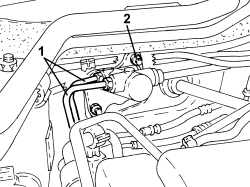
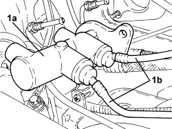

3330C12 MASTER CYLINDER (PUMP) - R.R. FOR RIGHT HAND DRIVE VERSIONS
- Path
- Procedures > 33 BRAKES > 3330 HYDRAULIC BRAKING SYSTEM > 3330C BRAKE PUMP, RESERVOIR AND LOAD PROPORTIONING VALVE > 3330C12 MASTER CYLINDER (PUMP) - R.R. FOR RIGHT HAND DRIVE VERSIONS
- Kind
- repair procedure (removal / refitting; the operation number is the code)
- Applies to
- engines: 2.2 JTS; all production periods
- Interactive page
- https://sloeber94.github.io/elrnDB-aBrrSpdr/en/#/946004011
Applies to: engines: 2.2 JTS; all production periods
 Removing
Removing
 Refitting
Refitting1. Replace the brake-clutch fluid reservoir plug using the tool.
Tool | Description | Function | Validity |
|---|---|---|---|
2000001400 | Plug | Brake-clutch fluid reservoir cap |

Applies to: engines: 2.2 JTS; all production periods
1. Undo the connectors and disconnect the rigid pipes from the master cylinder to the ABS control unit, master cylinder side.
- Open the clips for the pipes from the master cylinder to the brake-clutch fluid reservoir.
2. Undo the nuts fixing the master cylinder to the brake servo.

Applies to: engines: 2.2 JTS; all production periods
1. Move the master cylinder (1a) away from the brake servo and, using the tool, disconnect the pipes (1b) from the master cylinder to the brake-clutch fluid reservoir.
Tool | Description | Function | Validity |
|---|---|---|---|
1823015000 | Knife | Retainer removal |

Applies to: engines: 2.2 JTS; all production periods
Refitting
Removing- Connect the pipes from the master cylinder to the brake-clutch fluid reservoir.
- Place the master cylinder in its housing and secure it to the brake servo by tightening the nuts.
- Connect and tighten the connectors for the rigid pipes from the master cylinder to the ABS control unit, master cylinder side.
Component | Fastening | dia | Value (daNm) | Validity |
|---|---|---|---|---|
Brake pipe connectors | Connector | M10/M12 | 1.4 ÷ 1.8 |
- Close the clips for the pipes from the master cylinder to the brake-clutch fluid reservoir.
Op. 0010T64 BRAKE AND/OR CLUTCH FLUID CHECK LEVEL AND TOP UP AS NECESSARY
Topics linked from this page (2)
- 0010T64 BRAKE AND/OR CLUTCH FLUID CHECK LEVEL AND TOP UP AS NECESSARY
- 0010T65 HYDRAULIC BRAKE SYSTEM - BLEED AIR